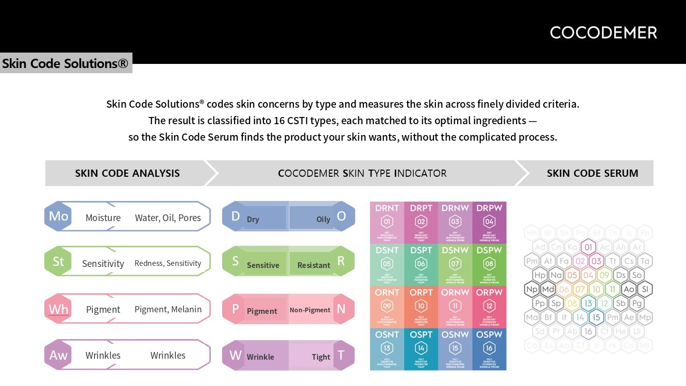

TECHNOLOGY
Reset · Boost · Keep
One flow, three stages
Our technology is designed into the sequence rather than into single products. Each stage — preparing the skin (Reset), delivering the actives (Boost), holding that condition (Keep) — has a technology of its own.
Clears impurities and surface build-up so the next stage can work evenly.
- Antipol-HiP™Particulate capture · protective film
- VelvetiPeel™Resurfacing without acids or abrasion
The core stage: active ingredients delivered deep into skin that has been prepared for them.
Seals in the condition built by the earlier stages and holds it, completing the system.
- Keep SystemBarrier support · moisture retention complex
Bubbles that settle into the contours of the skin
The formulation technology used in Aqua Quick Bubble Mask, currently on sale. Micro-bubble particles carry more surface area than the same volume of liquid, widening the contact area with the skin so the actives absorb rather than sit on top.

Micro-Bubble Delivery — Dense micro-bubbles settle into the contours of the skin, delivering moisture and actives quickly and evenly.
No-Rinse Formula — Absorbed as applied, with no rinsing step, so it fits into a routine without interrupting it and finishes without tack.
Daily Capacity — 80ml gives roughly 100 uses or more, so it is built for a routine repeated daily.
View Aqua Quick Bubble Mask* The above describes the characteristics of the raw materials and the formulation technology.
Technologies in development
The technologies behind the Reset and Keep stages. Test data will be published when the products carrying them launch. For samples and detailed documentation, please use the B2B enquiry form.
A complex designed to capture airborne particulates and form a protective film on the skin surface, defending against external pollutants.
It is paired with PHA, whose larger molecular weight absorbs more slowly than AHA, clearing built-up dead cells and residue gently.
Rather than strong acids or physical abrasion, it works by regulating the growth and differentiation of keratinocytes.
Formulated with low-molecular-weight rice HA at 100kDa or below, it follows the skin's own turnover rhythm instead of stripping the surface.
The finishing technology that seals in the actives delivered by the earlier stages.
It combines glucosyl ceramides, a plant-derived protective film, a humectant with high water-binding capacity, and a rice-derived DNA ingredient to support the barrier.
Where the brand began
The Coco-de-Mer of the Seychelles is a rare palm protected as a UNESCO World Heritage species. It gave the brand both its name and the starting point for its ingredient design.

Coconut Water — An ingredient modelled on the Coco-de-Mer, which is rich in naturally occurring amino acids.
Phytosterols — the compounds plants generate to heal their own wounds.
20 Amino Acids · Honey — builds a firm foundation for the skin.
Delivery Technology — Combines research into skin-compatible lipid membranes with solubilisation technology for poorly soluble substances.
※ This technology was used in the previous lineup. Those products are no longer offered for sale; the formulation records are retained.
16 skin types, 16 formulations
CSTI (COCODEMER Skin Type Indicator) sorts skin into 16 types across four axes: dry/oily, sensitive/resistant, pigmented/non-pigmented, and wrinkled/tight. Built during our custom-formulation years, it is now used in OEM and line-design discussions.

Four Formulation Axes
Moisturizing — blocks moisture loss, strengthens the skin barrier, refines skin texture
Whitening — antioxidant and pigmentation care
Anti Wrinkles — Wrinkle improvement, firmness care
Sensitive — helps prevent blemishes and soften their marks
View the previous collection